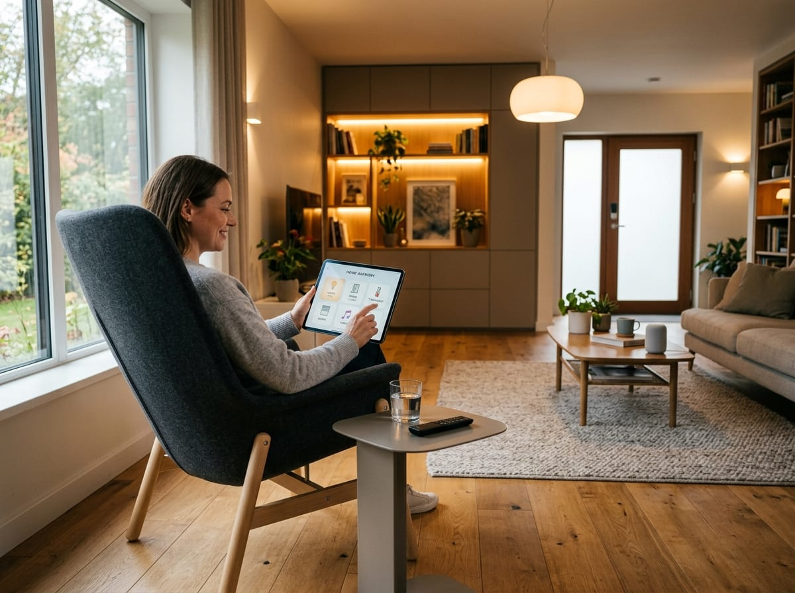

Cosa rende difficile vivere a casa tua?
Tecnologie e servizi per una casa più sicura, accessibile e vicina ai bisogni delle persone. La domotica assistiva integra tecnologie smart, servizi sociali e bisogni della persona. Non si tratta solo di installare dispositivi, ma di progettare ambienti più sicuri, semplici da usare e capaci di sostenere l'autonomia quotidiana. La Fondazione COINSIEME ETS promuove consulenza, formazione e progettazione in questo ambito, con attenzione a persone anziane, persone con disabilità, caregiver, operatori sociali e sanitari.
Le abitazioni standard non sono progettate per tutti
Una persona con disabilità motoria che non riesce ad aprire le tapparelle senza chiedere aiuto. Una persona anziana sola che teme di cadere di notte andando in bagno. Un caregiver esausto che non può fare affidamento su nessun supporto tecnologico.
Queste situazioni sono normalissime. E spesso hanno una soluzione concreta — se c'è qualcuno in grado di ascoltare davvero e progettare in modo personalizzato.

Come lavoriamo
Non installiamo dispositivi. Accompagniamo persone. Questo è il percorso che seguiamo con ogni persona o famiglia che si rivolge a noi.
Ascolto
Incontriamo la persona e la famiglia nel loro contesto. Ascoltiamo i bisogni, le abitudini, le difficoltà quotidiane. Non facciamo ipotesi prima di aver capito.
Valutazione
Valutiamo l'ambiente domestico, le capacità residue e le possibilità tecnologiche. Costruiamo un quadro preciso della situazione reale.
Progettazione
Progettiamo una soluzione su misura: scelta dei dispositivi, layout degli spazi, integrazione con gli ausili esistenti. Condividiamo il progetto e lo discutiamo.
Accompagnamento
Restiamo presenti dopo l'installazione: verifichiamo che tutto funzioni, formiamo la persona e il caregiver, aggiustiamo quello che serve.
A chi si rivolge
La domotica assistiva non è solo per chi ha una disabilità grave. È per chiunque voglia vivere con più autonomia e sicurezza.
Persone con disabilità
Motorie, cognitive, sensoriali. Ogni situazione è diversa e merita una risposta diversa.
Persone anziane
Autonomia e sicurezza in casa, anche con fragilità crescenti o dopo un ricovero.
Caregiver e famiglie
Un ambiente più accessibile riduce il carico di assistenza e migliora la qualità di vita di tutti.
Enti e residenze
Case famiglia, residenze assistite, strutture semiresidenziali che vogliono innovare.
La domotica funziona se ci sono professionisti preparati
Per questo COINSIEME non si limita a progettare ambienti: forma anche i professionisti che accompagnano le persone. Il corso Manager di Domotica Assistiva è il primo percorso in Italia che unisce competenze tecniche, sociali e relazionali in questo campo.
Scopri il corso →Manager di Domotica Assistiva
- Valutazione dei bisogni e del contesto abitativo
- Progettazione e installazione domotica
- Accompagnamento della persona e della famiglia
- Durata e costi: [DA DEFINIRE CON LA FONDAZIONE]
Fai il primo passo
Non serve avere le idee chiare su cosa fare. Basta raccontarci la tua situazione. Ci occuperemo noi di capire cosa può aiutarti.
Una prima consulenza orientativa è gratuita.